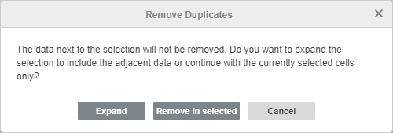
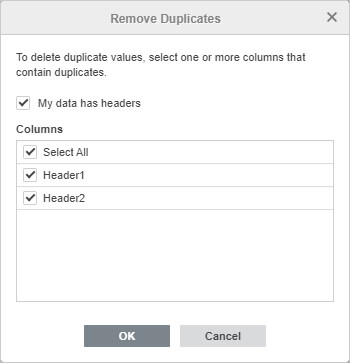
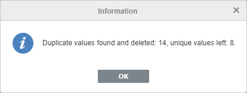

Uklanjanje duplikata
U Spreadsheet Editor-u možete ukloniti duplirane vrednosti iz izabranog opsega podataka ili iz formatirane tabele.
Da biste uklonili duplikate:
- Izaberite potreban opseg ćelija koji sadrži duplirane vrednosti.
- Pređite na karticu Data i kliknite na dugme Remove Duplicates na gornjoj alatnoj traci.
Ako želite da uklonite duplikate iz formatirane tabele, možete koristiti i opciju Remove duplicates na desnoj bočnoj traci.
Ako izaberete samo određeni deo opsega podataka, pojaviće se prozor sa upozorenjem u kojem će vas sistem pitati da li želite da proširite izbor kako bi se obuhvatio ceo opseg podataka ili da nastavite sa trenutno izabranim podacima. Kliknite na dugme Expand ili Remove in selected. Ako izaberete opciju Remove in selected, duplirane vrednosti u ćelijama koje se nalaze pored izabranog opsega neće biti uklonjene.

Otvoriće se prozor Remove Duplicates:

- Izaberite potrebne opcije u prozoru Remove Duplicates:
- My data has headers – označite ovu opciju da biste izuzeli zaglavlja kolona iz izbora.
- Columns – ostavite podrazumevanu opciju Select All ili je poništite i izaberite samo potrebne kolone.
- Kliknite na dugme OK.
Duplirane vrednosti iz izabranog opsega podataka biće uklonjene i pojaviće se prozor sa informacijama o tome koliko je duplikata uklonjeno i koliko je jedinstvenih vrednosti ostalo:

Ako želite da odmah vratite obrisane podatke, koristite ikonu Undo na gornjoj alatnoj traci ili kombinaciju tastera Ctrl+Z.